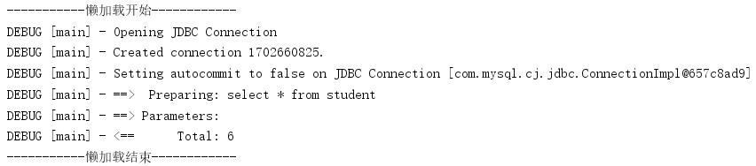
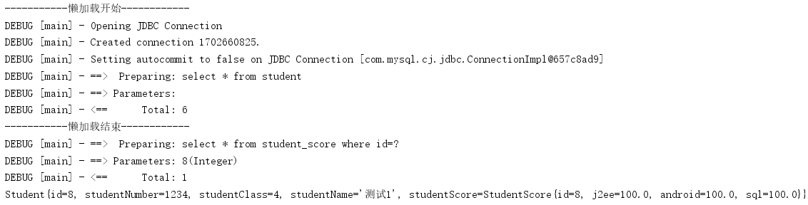
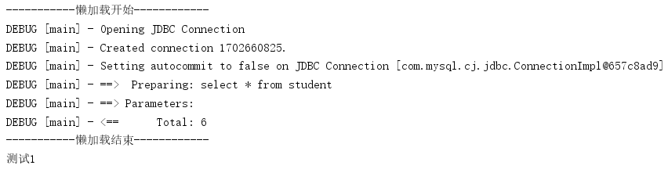
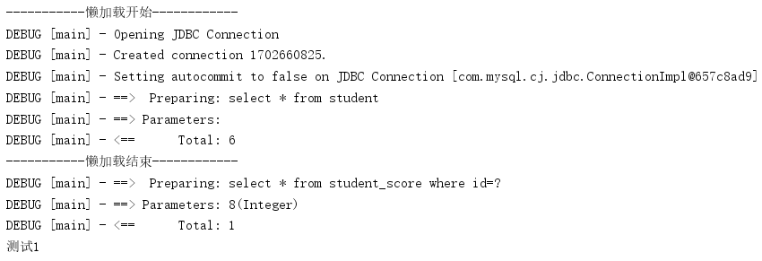

Mybatis的懒加载就是所谓的延迟加载，很多博客上也称之为按需加载，但是我觉得只有当配置了Mybatis的非侵略性懒加载才能称之为按需加载（下面会提到）。Mybatis的级联查询有两种方式：
本博文后面的讨论都是基于mybatis-3.2.7，所以开启懒加载需要两个依赖包：asm-3.3.1.jar和cglib-2.2.2.jar ，具体的适配版本需要自己测试。
开启mybatis的懒加载主要是再mybatis的全局配置文件中的settings元素中设置设置两个元素（mybatis的全局配置文件中的元素是有顺序的，settings元素只能在properties元素之后，在typeAliases元素之前），如下所示：
<settings>
<!--设置mybatis使用log4j日志-->
<setting name="logImpl" value="LOG4J"/>
<!--开启mybatis的懒加载（延迟加载）-->
<setting name="lazyLoadingEnabled" value="true"/>
<!--非侵略型懒加载-->
<setting name="aggressiveLazyLoading" value="false"/>
</settings>说明： mybatis-3.2.7默认不开启懒加载，默认开启非侵略性懒加载（侵略性和非侵略性后文会分析）。
一个学生（Student）有一个成绩单（StudentScore），Student类组合了StudentScore类；数据库中存在两张表：student和student_score，student和student_score是一对一的级联关系。
Student类代码如下：
package com.mybatis.pojo;
public class Student {
protected int id,studentNumber,studentClass;
protected String studentName;
protected StudentScore studentScore; //学生的成绩
//getter and setter
public int getId() {
return id;
}
public void setId(int id) {
this.id = id;
}
public int getStudentNumber() {
return studentNumber;
}
public void setStudentNumber(int studentNumber) {
this.studentNumber = studentNumber;
}
public int getStudentClass() {
return studentClass;
}
public void setStudentClass(int studentClass) {
this.studentClass = studentClass;
}
public String getStudentName() {
return studentName;
}
public void setStudentName(String studentName) {
this.studentName = studentName;
}
public StudentScore getStudentScore() {
return studentScore;
}
public void setStudentScore(StudentScore studentScore) {
this.studentScore = studentScore;
}
@Override
public String toString() {
return "Student{" +
"id=" + id +
", studentNumber=" + studentNumber +
", studentClass=" + studentClass +
", studentName='" + studentName + '\'' +
", studentScore=" + studentScore +
'}';
}
}StudentScore的代码如下：
package com.mybatis.pojo;
public class StudentScore {
protected int id;
protected float j2ee,android,sql;
//getter and setter
public int getId() {
return id;
}
public void setId(int id) {
this.id = id;
}
public float getJ2ee() {
return j2ee;
}
public void setJ2ee(float j2ee) {
this.j2ee = j2ee;
}
public float getAndroid() {
return android;
}
public void setAndroid(float android) {
this.android = android;
}
public float getSql() {
return sql;
}
public void setSql(float sql) {
this.sql = sql;
}
@Override
public String toString() {
return "StudentScore{" +
"id=" + id +
", j2ee=" + j2ee +
", android=" + android +
", sql=" + sql +
'}';
}
}Mapper接口中主要声明了抽象方法：public List<Student> lazySelect() throws Exception; ,映射文件中于此对应的主要代码如下：
<!--延迟加载的查询的映射配置-->
<resultMap id="lazyLoadingRes" type="Student">
<id column="id" property="id"/>
<result column="student_number" property="studentNumber"/>
<result column="student_name" property="studentName"/>
<result column="student_class" property="studentClass"/>
<result column="total_score" property="totalScore"/>
<association property="studentScore" javaType="StudentScore" column="id" select="selectScoreById" />
</resultMap>
<!--查询student_score表-->
<select id="selectScoreById" resultType="StudentScore" parameterType="Integer">
select * from student_score where id=#{param0}
</select>
<!--查询所有student信息-->
<select id="lazySelect" resultMap="lazyLoadingRes">
select * from student
</select>可以看到，我没有使用sql语法上的级联查询，而是利用mybatis的association的select属性实现两个存在逻辑上的级联的单表sql查询语句的级联查询。
写了一个测试方法，代码如下（其中的studentDao就是已经在@Before里实例化了的Mapper对象）：
@Test
public void test1() throws Exception {
System.out.println("-----------懒加载开始------------");
List<Student> students = studentDao.lazySelect();
System.out.println("-----------懒加载结束------------");
//System.out.println(students.get(1));
}此时运行结果如下图：

可以看到，开启懒加载后（非侵略性），在无需访问从查询的数据时，只执行了主查询 ，那么当我们需要访问从查询的数据时候呢？将上面的测试方法的System.out.println(students.get(1));的注释去掉，便是需要打印Student对象的所有属性，而Student对象有一个StudentScore对象属性，此处便是需要访问从查询的数据了，再看结果：

可以看到，当我们需要访问从查询的数据时，会在需要访问的时候再执行从查询。那我们仅仅是需要访问主查询的数据呢？将 System.out.println(students.get(1)); 改为 System.out.println(students.get(1).getStudentName()); （此时只访问Student对象的name属性，此属性通过主查询得到），此时再看结果：

可以看到，当我们开启的是非侵略性懒加载时，只有当我们需要访问从查询的数据时，才会执行从查询，我们访问的name属性不是从查询的数据，所以也只执行了主查询，没有执行从查询，但是如果将懒加载改为侵略性的呢？将mybatis的全局配置文件中的<setting name="aggressiveLazyLoading" value="false"/>中的true改为false，再在上一步的基础上查看结果：

我们看到，当开启的是侵略性懒加载时，虽然访问的是非从查询数据（访问的是主查询的数据），但是还是执行了从查询，这便是侵略性懒加载和非侵略性懒加载的区别了：侵略性懒加载只要访问对象的属性，不管是不是从查询的数据，都会执行从查询。